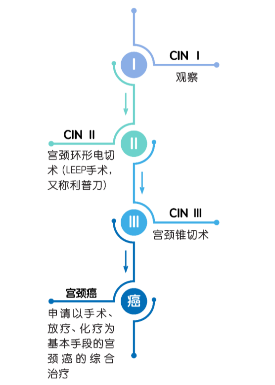

知识课堂
锦囊在手，健康我有
俗话说得好，“常在江湖漂，难免会挨刀。”即使是表面健康美丽的姑娘，也有可能感染致癌性的HPV——这个可能导致宫颈癌的凶手。为了帮助大家科学合理地对抗HPV感染，我们针对不同阶段准备了三个锦囊！
HPV感染分为三个阶段：潜伏感染，亚临床感染和临床感染。若你尚未感染HPV，可直接阅读下文中锦囊一的相关内容。处于前两个阶段的朋友，get锦囊二。如果你已处于第三阶段，请仔细阅读锦囊三所示内容哦！
防守是最好的进攻！
接种HPV疫苗适用于预防相应HPV型别所致疾病，包括宫颈癌及宫颈上皮内瘤样病变等。
二价人乳头瘤病毒吸附疫苗已于2017年7月31日起在我国内地正式上市，在各城市的社区医院及社区卫生服务中心就能进行接种啦！
定期复查，切勿大意！
你目前不需要“场外支援”（治疗）
大多数HPV拜倒在你的免疫力下
“战事告急”，场外求助！
致癌型HPV（主要是HPV16和HPV18）感染:
首先，确认人体组织是否病变

锦囊在手，遇上猖獗的HPV也不会阵脚大乱啦！如果一个锦囊解决不了，那就用两个！为了守护健康美好的生活，速速get起来吧！
Refs：
- Schneider A. Pathogenesis of genital HPV infection. Genitourin Med. 1993 Jun;69(3):165-73.
- 孙晓光。HPV感染的治疗。抗癌之窗，2014年第5期: 23-4.